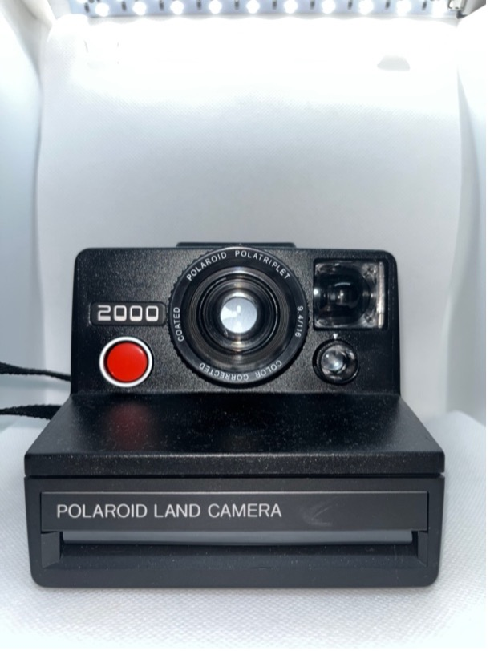

SX-70
Polaroid Land Camera 1000

Rok výroby: 1996
Rozsah zaostření: 1,2m – nekonečno
Objektiv: 103mm f/14,6
Typ filmu: SX-70
Další funkce: korekce expozice
Stav: 7/10
Funkčnost: Ano
Kupní cena: 500 kč
Poznámka:
Polaroid Land Camera 1500

Rok výroby: 1977
Rozsah zaostření: 1m – nekonečno
Objektiv: 116mm f/9,4
Typ filmu: SX-70
Další funkce: korekce expozice
Stav: 5/10
Funkčnost: Ano
Kupní cena: 217 kč
Poznámka: